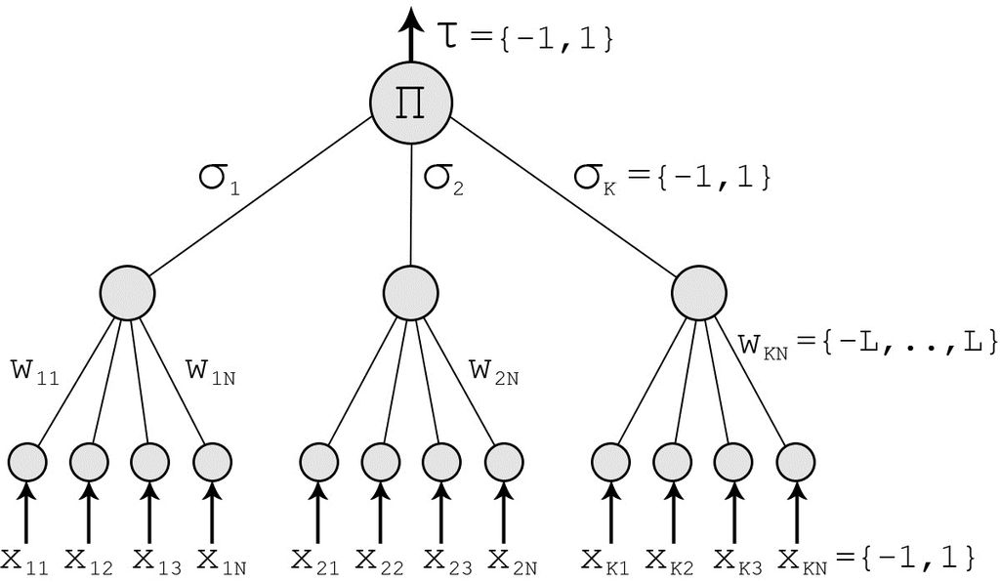

Definition
Artificial neural networks are well known for their ability to selectively explore the solution space of a given problem. This feature finds a natural niche of application in the field of cryptanalysis. At the same time, neural networks offer a new approach to attack ciphering algorithms based on the principle that any function could be reproduced by a neural network, which is a powerful proven computational tool that can be used to find the inverse-function of any cryptographic algorithm.
The ideas of mutual learning, self learning, and stochastic behavior of neural networks and similar algorithms can be used for different aspects of cryptography, like public-key cryptography, solving the key distribution problem using neural network mutual synchronization, hashing or generation of pseudo-random numbers.
Another idea is the ability of a neural network to separate space in non-linear pieces using "bias". It gives different probabilities of activating the neural network or not. This is very useful in the case of Cryptanalysis.
Two names are used to design the same domain of research: Neuro-Cryptography and Neural Cryptography.
The first work that it is known on this topic can be traced back to 1995 in an IT Master Thesis.
Applications
In 1995, Sebastien Dourlens applied neural networks to cryptanalyze DES by allowing the networks to learn how to invert the S-tables of the DES. The bias in DES studied through Differential Cryptanalysis by Adi Shamir is highlighted. The experiment shows about 50% of the key bits can be found, allowing the complete key to be found in a short time. Hardware application with multi micro-controllers have been proposed due to the easy implementation of multilayer neural networks in hardware.
One example of a public-key protocol is given by Khalil Shihab. He describes the decryption scheme and the public key creation that are based on a backpropagation neural network. The encryption scheme and the private key creation process are based on Boolean algebra. This technique has the advantage of small time and memory complexities. A disadvantage is the property of backpropagation algorithms: because of huge training sets, the learning phase of a neural network is very long. Therefore, the use of this protocol is only theoretical so far.
Neural key exchange protocol
The most used protocol for key exchange between two parties A and B in the practice is Diffie–Hellman key exchange protocol. Neural key exchange, which is based on the synchronization of two tree parity machines, should be a secure replacement for this method. Synchronizing these two machines is similar to synchronizing two chaotic oscillators in chaos communications.
Tree parity machine
The tree parity machine is a special type of multi-layer feedforward neural network.
It consists of one output neuron, K hidden neurons and K×N input neurons.
Imagine that the secret keys of R and T are in fact both the same s=(1,0,1,0). Now R sends a random binary vector a (e.g. a=(1,0,1,1)) to T and expects T to respond back to it the scalar product b=< a,s >, which is
in this example. We call this a a challenge. Remember, we deal with bit arithmetic here, so the “+” is, in fact, an XOR. The multiplication is the same as in the real numbers. Or for mathematicians: we calculate in the field GF(2) or 𝔽₂, the field with 2 elements.
Protocol
Each party (A and B) uses its own tree parity machine. Synchronization of the tree parity machines is achieved in these steps
- Initialize random weight values
- Execute these steps until the full synchronization is achieved
- Generate random input vector X
- Compute the values of the hidden neurons
- Compute the value of the output neuron
- Compare the values of both tree parity machines
- Outputs are the same: one of the suitable learning rules is applied to the weights
- Outputs are different: go to 2.1
After the full synchronization is achieved (the weights wij of both tree parity machines are same), A and B can use their weights as keys.
This method is known as a bidirectional learning.
MOUFDI Zakaria
Mollitia similique porro ea sed dolor sequi corrupti accusamus hic eius earum esse excepturi, obcaecati repellat facere dicta maxime nemo quidem autem? Beatae reprehenderit repudiandae, dolorem labore.
MOUFDI Zakaria
Mollitia similique porro ea sed dolor sequi corrupti accusamus hic eius earum esse excepturi, obcaecati repellat facere dicta maxime nemo quidem autem? Beatae reprehenderit repudiandae, dolorem labore.